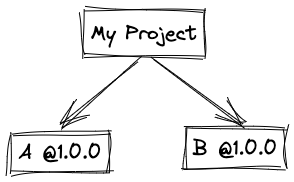
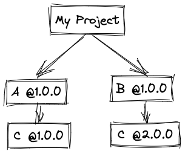
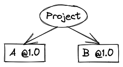
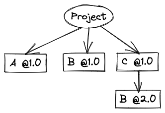
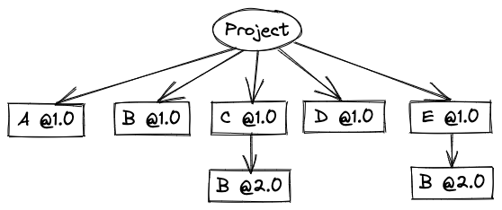
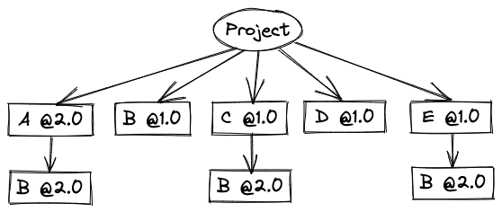
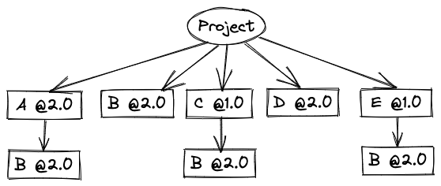
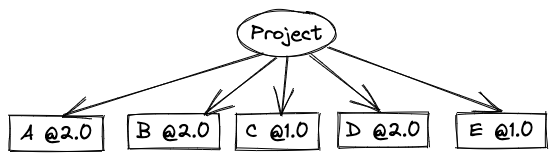
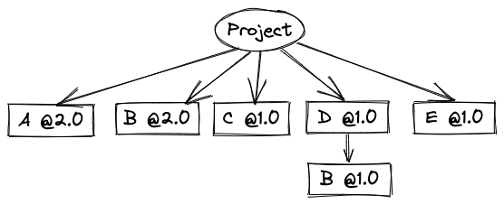

深入理解npm install原理
相信作为一个程序员对 npm 的基本使用命令应该了如指掌，但是你真的了解 npm install 执行的机制么？为什么 npm install 的时候会多出一个 package-lock.json 文件？为什么有时候执行 npm install 的时候会同步更新 package-lock.json 文件，有时候又不会更新？package-lock.json 文件什么时候需要更新，什么时候不需要更新？
带着上述问题，笔者对 npm install 的原理和机制进行了一波研究，也作为自己对 npm 知识的学习总结。
npm install 会安装我们项目中所有的依赖包至 node_modules 文件夹中，假设现在有一种情况存在两个包 A 和 B 分别依赖 C 包的 v1 和 v2 版本，那么最终将会产生怎么样的依赖树呢？
1 | { |
同样的 package.json 文件，早期 npm 版本产生的依赖树只会含有 packageA 和 packageB。
1 | ├─ node_modules |
用 npm3 以上版本之后，我们的依赖树中也会含有 packageC，node_modules 目录结构也将变为如下：
1 | ├─ node_modules |
安装机制差异
npm2 安装机制
还是上述假设的场景，依赖包 A 依赖 v1.0 版本的包 C，包 B 依赖 v2.0 版本的包 C，此时我们创建项目 My Project 依赖包 A 和 B 如下：

我们知道 npm install 会安装所有项目的依赖包以及所有依赖包自身的依赖，那么 My Project 这个项目所依赖的包 C 版本是 v1.0 还是 v2.0？
在 npm2 中，npm 不会去考虑 C 包的具体使用版本，每个版本都会被加入到依赖树中，存放在其被引用的模块下。从而生成如下依赖树：

使用 npm ls 查看全部依赖和关系会得到：
1 | ├─ node_modules |
使用 npm ls –depth=0 查看主要依赖：
1 | ├── packageA@1.0.0 |
尽管嵌套的位置允许同一模块的两个不同版本共存，但大多模块加载器无法将同一模块的两个版本加载到内存中。Node.js 的强大就是它是针对此情况诞生的，能够实现多版本共存且不冲突。
npm3 机制
npm3 的处理依赖方式不同于 npm2。npm2 更像是以嵌套的方式安装依赖，npm3 则尝试将依赖树打平，将一些依赖的依赖作为主要依赖安装目录中。
核心区别：
- 目录结构中的位置不再决定该依赖是项目一级依赖还是项目某个依赖的依赖
- 依赖树的生成会受安装的顺序所影响
假设项目依赖于 A 模块，且 A 模块依赖于 B 模块，则 A、B 两模块都会作为顶级模块引入，此时生成的依赖树为：

此时项目新增了模块 C，且依赖于模块 B 的 2.0 版本，由于模块 B 的 1.0 版本已经存在于顶级模块，所以 B2.0 模块的还是以嵌套的方式安装在 C 模块下，具体如下：

tips：尽管同样处在一级目录，不代表模块 A 和模块 B 之间没有依赖关系
假设现在依次又要新增模块 D（依赖 B1.0 版本）和模块 E（依赖 B2.0 版本），由于模块 B1.0 已经存在于顶级，所以不需要再复制此依赖，然而依赖 B2.0 需要重新在 E 模块中再复制一份：

接下来考虑依次发送以下两个依赖变更的场景
- 模块 A 更新且依赖由 B1.0->B2.0
- 模块 D 更新且依赖由 B1.0->B2.0
发生场景 1: 当我们执行 npm install A@2.0 –save 后，npm3 会执行以下操作：
- 移除模块 A1.0
- 安装模块 A2.0
- 保留 B1.0，因为模块 D 依旧依赖模块 A1.0
- 模块 A2.0 下安装依赖 B2.0，因为 B1.0 已经存在顶层依赖结构

发生场景 2:npm3 会执行以下操作：
- 移除模块 D1.0
- 安装模块 D2.0
- 移除模块 B1.0，因为没有模块再依赖此模块
- 安装模块 B2.0 至顶级，因为此时不存在其他 B 模块依赖

运行npm dedupe可以去除多余的重复，得到全新的依赖树：

npm3 的弊端：不确定性
如果你和你的开发团队使用了 package.json 同时又用了 npm install 添加了依赖包，这就会有可能出现本地的 node_modules 目录和其他团队成员的不一致。
为什么会出现这种情况呢？
这和上述提到的，npm 依赖树的生成会受依赖包的顺序所影响。
回到上面的例子：在本地模块 A 由 1.0 版本更新至 2.0 后生成如下依赖树：
对应的 package.json 文件如下：
1 | { |
但如果项目其他成员拿到此文件运行npm install后生成的依赖树会如下：

牢记安装顺序会影响依赖树的生成！
由于 npm install 会按字母排序进行依赖包的安装，此时模块 A2.0 会第一个安装，同时在顶级安装模块 B2.0，和之前最后安装更新不同，从而引起了依赖树的不同。
不用担心，另外尽管依赖树不同，但是只要全部安装了依赖包就算构建的依赖树不同也不会有问题。
那该如何保持依赖树一致呢？很简单，只要删除 node_modules 文件夹，重新执行 npm install 即可。因为安装的顺序是由 package.json 文件定义的，所以每次执行 npm install 的时候必然都是相同的顺序，即按字母排序。